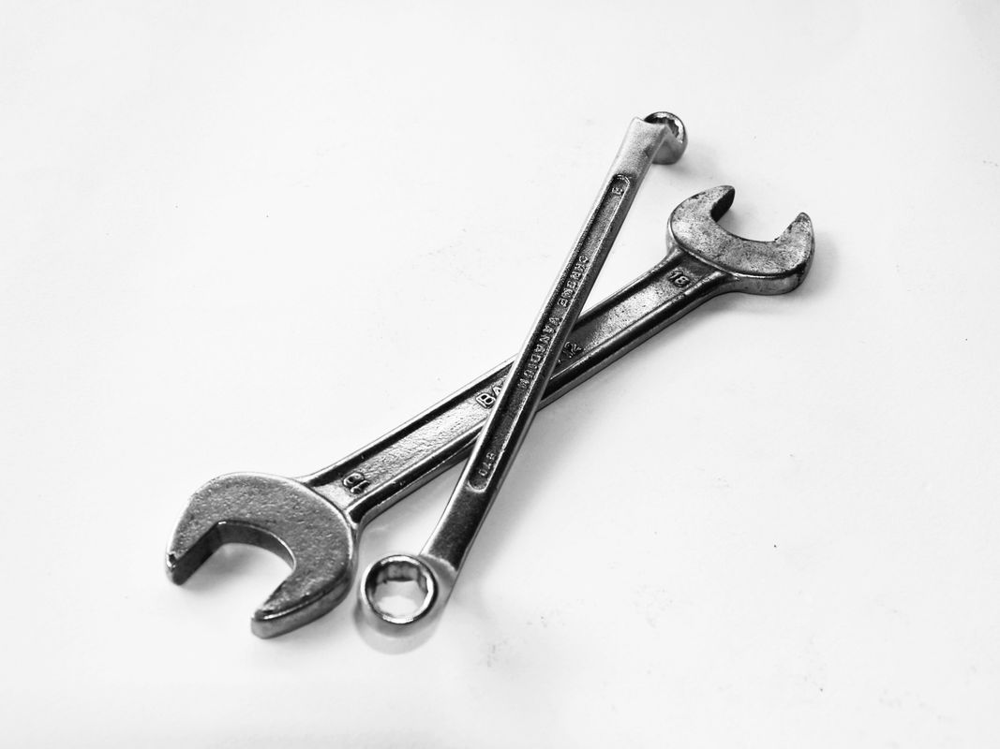

수출 지원 3종 마감 시간표 — 연장된 물류비 창구는 모레 닫힙니다

중소벤처기업부가 지금 받아서 심사에 넣는 수출·제조 지원 공고가 세 건입니다. 이 중 하나는 모레(9월 30일) 창구가 닫히고, 나머지 둘도 이번 달 안에 마감이 끝납니다. 세 건은 대상이 완전히 달라서 — 온라인 판매자, 수출을 묶어 이끌 단체, 제조 현장을 자동화할 전문기관 — 각자 해당되는 하나만 챙기면 됩니다. 아래 날짜와 담당 부서 전화번호는 오늘 공고 원문에서 그대로 옮겨 적은 값입니다.
30초 요약
| 항목 | 내용 |
|---|---|
| 1번 온라인수출 물류 지원 | 해외 배송·보관 비용 지원 · 9월 30일(수) 마감 · 기존 9/16에서 연장됨 · 대상: 온라인으로 수출하는 중소기업 |
| 2번 2027년 수출컨소시엄 | 지역·업종 수출 컨소시엄을 이끌 주관단체 모집 · 10월 7일(수) 마감 · 개인 기업은 단독 신청 대상 아님 |
| 3번 2027년 스마트공장 구축지원 | 자동화·인공지능 전환 과제를 수행할 주관기관 모집 · 10월 13일(화) 마감 · 솔루션 보유 공급기업·컨설팅사 대상 |
| 세 건 공통 | 중소벤처기업부 소관 · 중소벤처기업부 누리집 공고 게시판에서 접수 · 마감 시간은 공고마다 다르므로 원문 확인 필수 |
1. 누가 각각의 대상인가
1번 물류 지원은 해외 온라인 플랫폼이나 자사몰로 물건을 팔고 있는 중소기업이 대상입니다. 반품비 말고 '보내는 과정'의 비용 — 풀필먼트(주문 접수부터 배송까지를 외부 업체에 맡기는 것)와 해외물류센터 활용 비용이 지원 항목입니다. 이미 아마존·이베이·쇼피 등에서 실적이 있는 사업자가 신청 창구에 들어갈 수 있습니다.
2번 수출컨소시엄은 개별 기업이 신청하는 사업이 아닙니다. 여러 중소기업을 업종이나 지역으로 묶어서 해외 전시회·바이어 상담회를 함께 열 수 있는 단체 — 협회, 조합, 지자체 출자법인 같은 조직이 '주관단체'로 지원해 선정되면, 그 단체에 속한 기업들이 마케팅·상담회·시장조사 지원을 묶어서 받는 구조입니다.
3번 스마트공장 주관기관은 자동화 시스템·솔루션을 만들어 납품하는 공급자 쪽입니다. 자동화 장비 회사, 생산관리 소프트웨어 회사, 제조 컨설팅사, 지역 연구소 등이 수행기관으로 지정되어 2027년 중소 제조사 매칭 물량을 배정받는 사업입니다. 2026년에도 같은 구조로 진행됐습니다.
2. 지원 내용 — 어디에 돈이 드는가
| 사업 | 지원 내용 | 문의처 |
|---|---|---|
| 1번 온라인수출 물류 | 해외 배송비, 보관료, 포장비 등 온라인수출 풀필먼트 이용료와 해외물류센터 활용 비용 | 글로벌성장정책과 044-204-7504 |
| 2번 수출컨소시엄 | 컨소시엄 참여 중소기업의 해외 마케팅, 바이어 상담회, 시장조사 | 글로벌성장정책과 044-204-7507 |
| 3번 스마트공장 주관기관 | 디지털·인공지능 전환 과제의 기획·실행·관리 수행 기관 지정과 예산 배정 | 제조혁신과 044-204-7964 |
지원 한도·자부담 비율은 세 공고 모두 붙임 문서(공고문 본문)에 적혀 있고, 공고 사이에 차이가 큽니다. 위 표는 창구 식별용 최소 정보이고, 금액 조건은 원문에서 확인하세요.
3. 언제까지, 언제 열리나
세 건 모두 9월 16일에 신청이 시작됐습니다. 마감 순서가 1번 → 2번 → 3번 입니다.
| 사업 | 신청 시작 | 신청 마감 | 비고 |
|---|---|---|---|
| 1번 온라인수출 물류 | 2026-09-16 | 2026-09-30(수) | 원래 9/16이 마감이었으나 2주 연장됨 — 연장 공고 기준으로 적음 |
| 2번 수출컨소시엄 | 2026-09-16 | 2026-10-07(수) | 주관단체·과제 함께 접수 |
| 3번 스마트공장 | 2026-09-16 | 2026-10-13(화) | 2027년 사업 수행기관 사전 모집 |
4. 서류 — 무엇부터 붙이나
세 사업 공통으로 필요한 것은 사업자등록증과 최근 실적 증빙입니다. 거기서 갈립니다.
- 1번 물류 — 온라인수출 실적이 보이는 화면·거래내역, 이용할 예정인 풀필먼트·물류센터 견적이나 이용 증빙. 공고문 붙임에 신청서 양식이 있습니다.
- 2번 컨소시엄 — 참여 기업 명단, 컨소시엄 운영 기획서(시장·국가·일정·예산), 단체 정관·구성 증빙. 기획서가 심사의 전부라고 생각하면 됩니다.
- 3번 스마트공장 — 과거 수행실적(과거 구축·컨설팅 계약 건수·금액), 보유 인력 증빙(기술·관리 인력 명단과 자격), 참여 예정 협의체 자료.
5. 신청 순서
- 1번 물류 지원 (모레 마감): 온라인수출 물류 지원사업 공고(연장) 바로 가기 → 붙임에서 신청서 내려받아 작성 → 담당 부서 안내에 따라 온라인·우편 접수. 마감 당일에는 접속자가 몰려 접수가 늦어질 수 있으니 하루 전에 올리세요.
- 2번 수출컨소시엄: 수출컨소시엄 주관단체 모집 공고 바로 가기 → 참여 기업을 먼저 모으고 → 기획서 양식 확인 → 10월 7일 17시 전 제출.
- 3번 스마트공장: 스마트공장 주관기관 모집 공고 바로 가기 → 수행실적·인력 자료 취합 → 10월 13일 접수.
6. 떨어졌다면, 그리고 마감이 지났다면
1번 물류 지원이 9월 30일 자로 닫히면, 같은 창구는 통상 이듬해 초 다시 열립니다. 그 전에 놓친 배송비는 지원받지 못합니다. 2번와 3번은 2027년 예산이 배정되는 사업이라, 이번 공모에서 빠지면 다음 단계(수혜 기업 매칭)에 자동으로 넘어가지 않습니다 — 주관단체·주관기관으로 못 뽑힌 조직은 그해 사업에서 빠지는 것이니, 기간 안에 한 번이라도 제출하는 게 관건입니다.
세 공고 모두 기관 사정으로 세부 조건·마감이 바뀔 수 있습니다. 접수 전에 위 링크의 원문과 담당 부서 유선 확인을 권합니다. 자금 사정이 급해서 대출이 필요한 사업자라면 이건 결이 다른 자리이고, 경영안정자금은 2026 정책자금 한눈에 보기가 맞습니다.